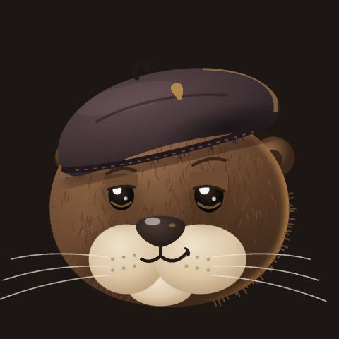
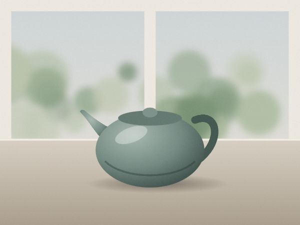

Frame 01 / the darkroom
Develop your photos in the browser.
A layered photo editor that works offline on your own device. Cut out a subject, make a sticker, edit with friends. Nothing is uploaded.




Contact sheet / 6 frames
Everything a darkroom had. Plus layers.
Layers and masks
Groups, blend modes, opacity, layer masks and adjustment layers.
12ATone and looks
Levels, curves, color, sharpen and blur, one tap looks and auto enhance.
13ARemove background
An open license model runs on your device, with a refine brush and feathered edges.
14ASticker maker
Outline, caption and a 512 px WebP under 100 kB, ready for your messenger.
15AText that sits right
Font presets, outline, shadow, curved text and speech bubbles.
16AEdit together
Up to five friends on one document, each with a cursor and a layer of their own.
17A
Frame 18A / passing a print
Send it to a friend, in full quality.
Straight from your browser to theirs. No upload, no account, no recompression.
- 1
Six words and a QR code
Read the words out or let a phone camera scan the code.
amberotterpaperriversilvervelvet - 2
Confirm with six more
Both screens show the same confirmation words, so nobody can slip in between.
- 3
Untouched and verified
The exact bytes arrive and are checked with SHA-256 before you can save them.
sha256 match

Fine print
Honest limits.
- The cutout model and its runtime download once, about 16 MB, then work offline.
- Large photos can be slow on older phones. The editor previews at screen size and renders full size on export.
- Some browsers cannot encode WebP from a canvas. The app tells you and offers PNG instead.
- Peer to peer can fail on very strict networks. You can add your own TURN server in Settings.
- Printing colors are an approximation: the CMYK mode simulates a generic coated press, not your print shop.